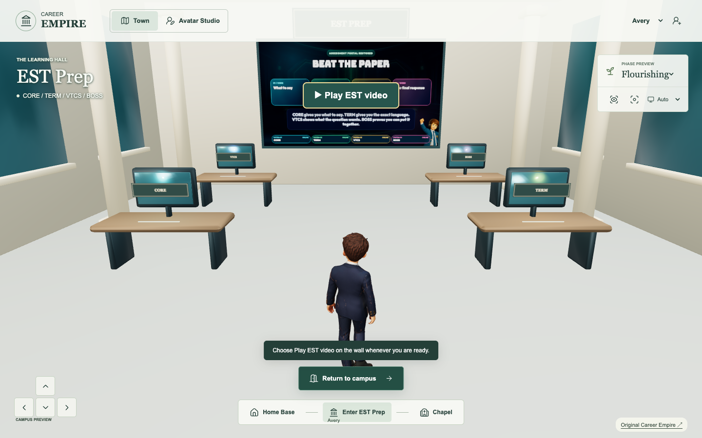
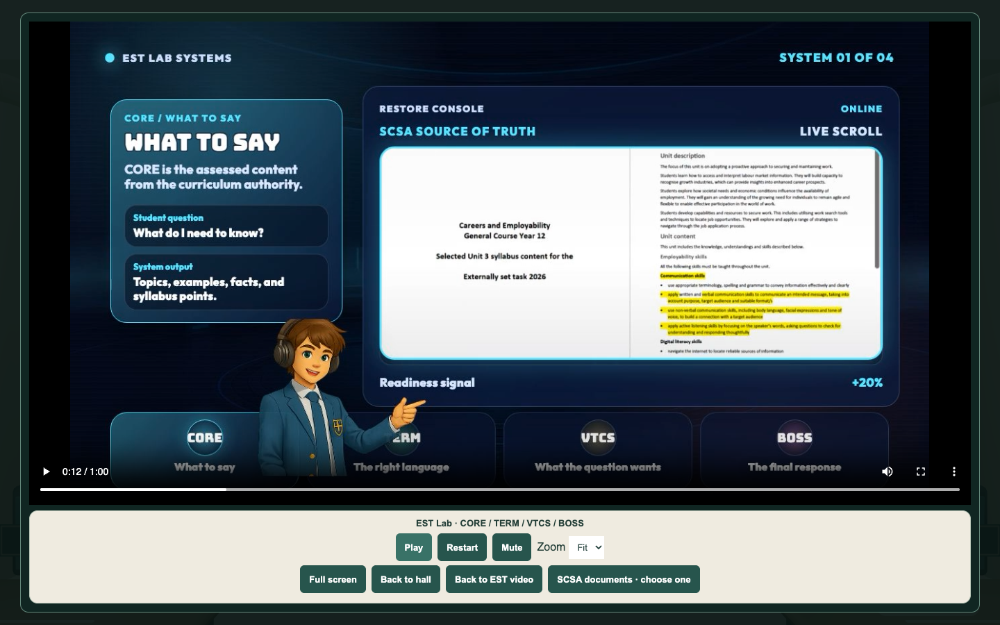
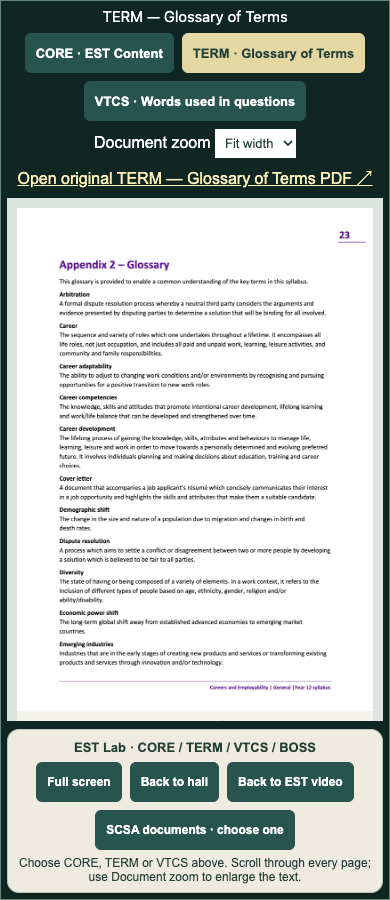

EST briefing release — 11 September 2026
The clearer EST Lab film is ready for publication with the accepted Revision 3 controls. This is a bounded EST release for the current demonstration; the campus lighting preview remains separate and unpublished.
Player flow
Choose Enter EST Prep to arrive inside the room. The wall Play button is immediately visible; nothing plays automatically. Choose Play to watch in the larger viewer. Pause, scrub backward or forward, restart, mute, zoom or use full screen. Back to hall pauses playback and restores movement. Back to EST video returns from documents to the paused film.
SCSA documents opens the in-window reader with three choices: CORE — EST Content (5 pages), TERM — Glossary of Terms (3 pages), and VTCS — Words used in the formulation of questions (3 pages). Scroll and zoom the exact rendered source pages; original PDFs remain linked. No curriculum edition, assessment criteria, student data, rewards or learning modules changed.
Exact film and scope
The replacement is the existing EST Lab Systems MP4, 1280×720, 60.053 seconds. SHA-256: 8d78d63b4a0db0b4629fcbf5374a4706caececfa7368568ab79e2a08c1ef20cc. The original poster is retained. Only the MP4 media asset is replaced; accepted navigation, controls and source-document page assets are now being published with it. No duplicate controls or new film editing. The world-preview lighting candidate is excluded.



Verification and release status
Replacement hash verified against Tania's supplied value. Revision 3 behavior and controls are preserved; only versioned film/dependency URLs are added for returning-browser cache refresh. Desktop/mobile playback, seek/restart, room return and document checks are retained with this release. Public Blueprint integration and game publication are separate gates; live verification is pending.
After the EST release, resume Stage 1 campus lighting review under the existing five-stage plan. No campus appearance acceptance is inferred.